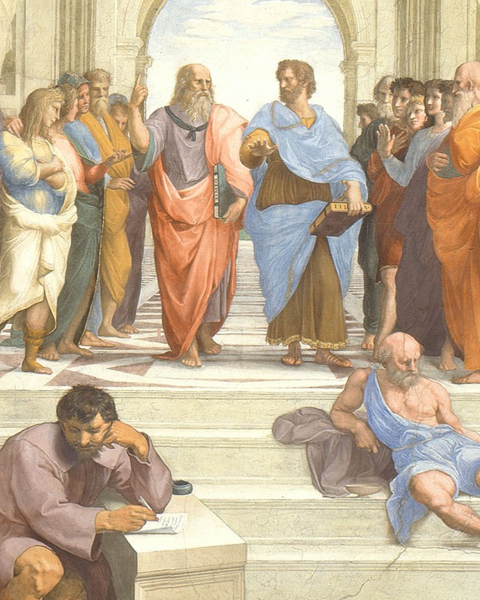
Raphael hid Rome's stars among the sages.
Swipe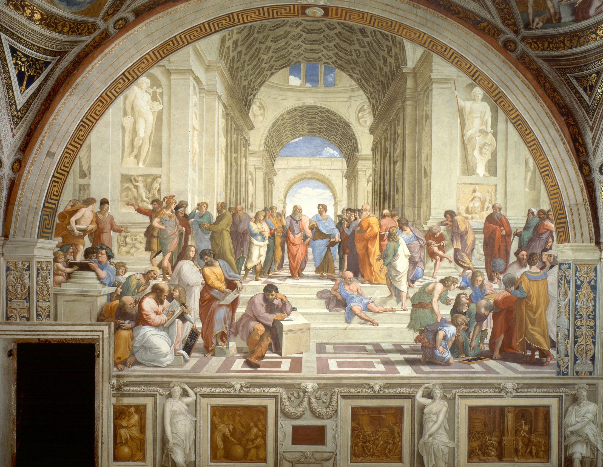
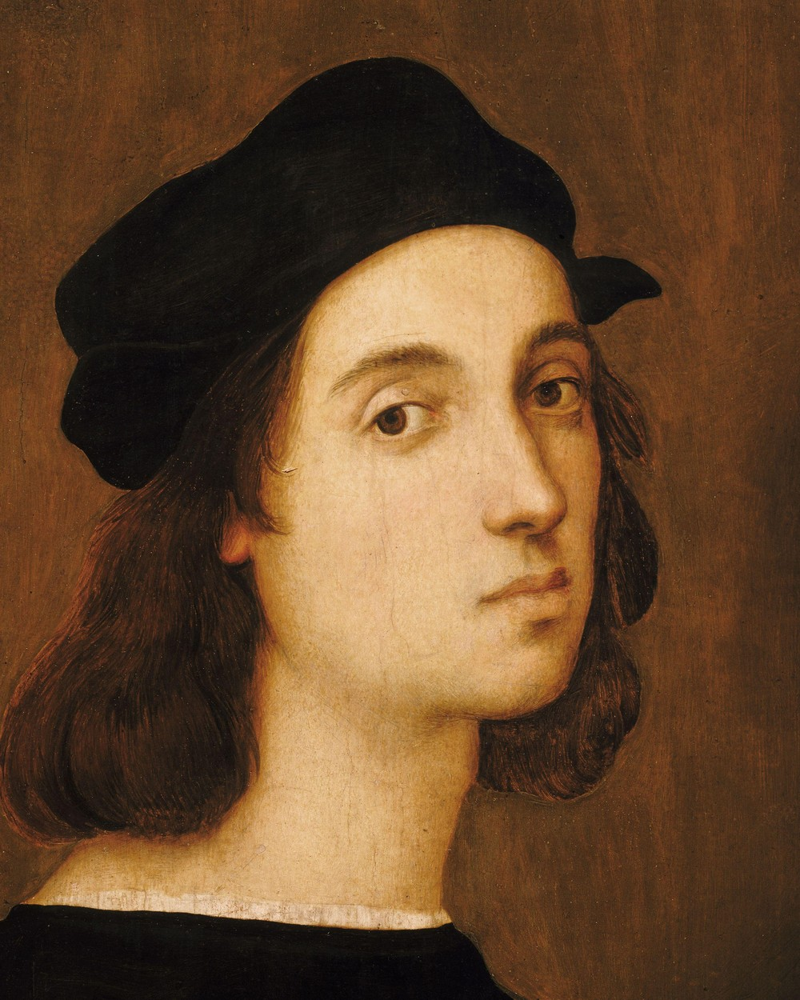
Raphael, self-portrait · c. 1506That's roughly how old Raphael was when Pope Julius II handed him the walls of a private room in the Vatican. Nearby, Michelangelo was up a scaffold, painting the Sistine ceiling.
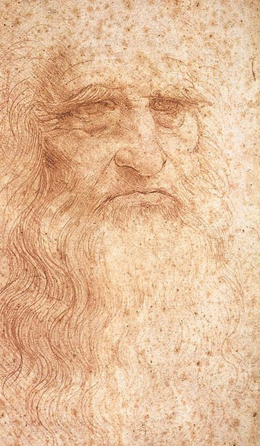
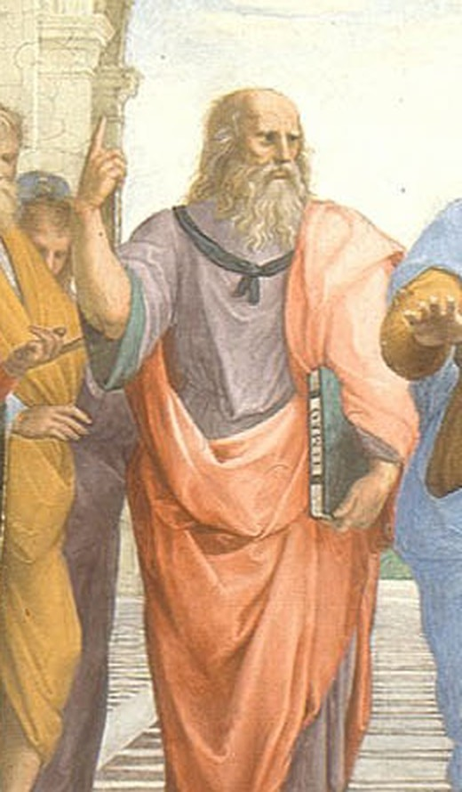
Plato points up, to ideas. Aristotle's palm presses down, to this world. Historians think Raphael gave Plato the old master's beard.
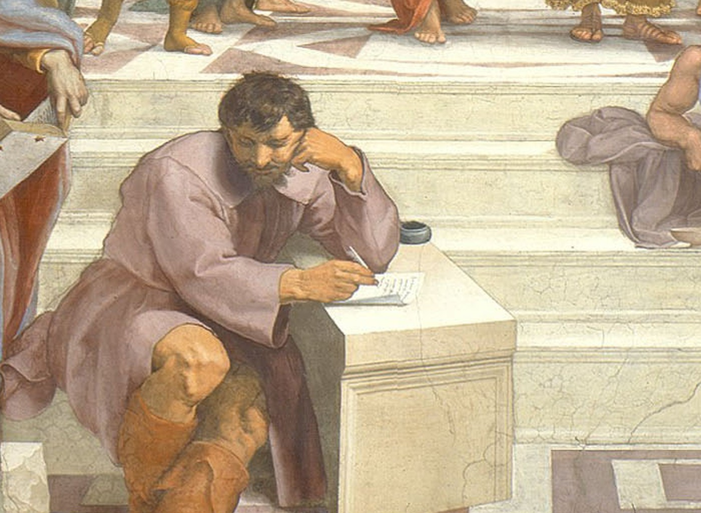
Heraclitus sits apart, chin on fist, in stonecutter's boots. He is widely read as Raphael's portrait of his great rival.
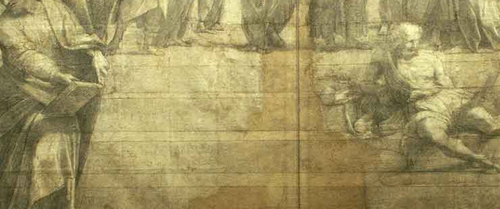
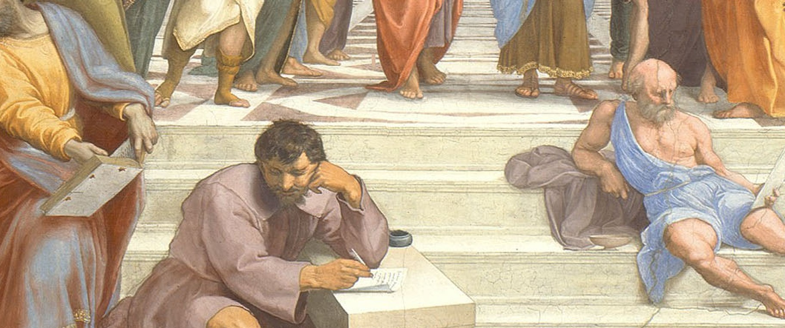
Raphael's full-size drawing has an empty step. The plaster suggests Heraclitus was the last figure painted, in 1511. Many think it was a tribute after seeing the Sistine ceiling.
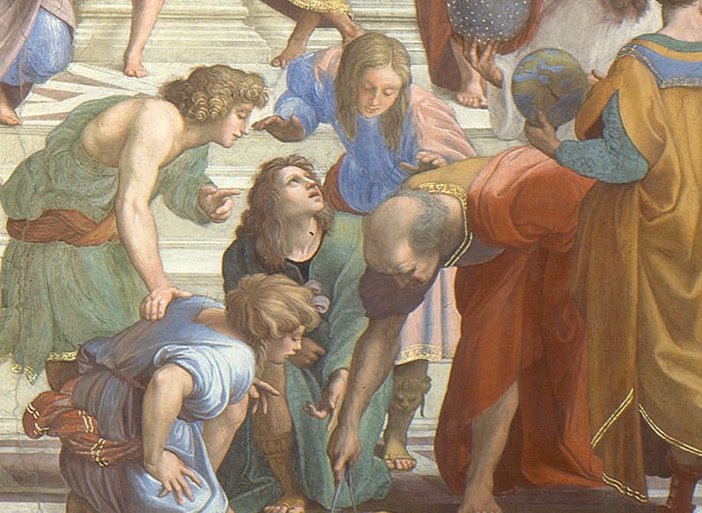
Bent over a slate with a compass: Bramante, says tradition. He was designing the new St Peter's, and the vaulted hall above echoes it.
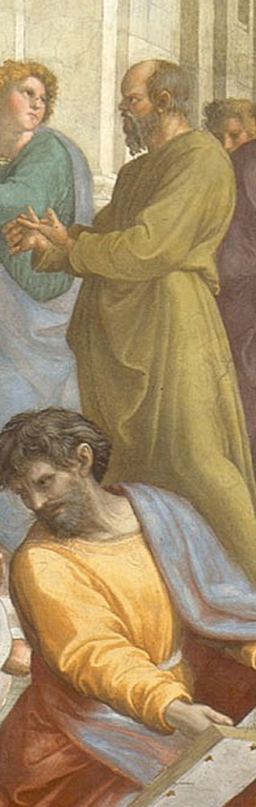
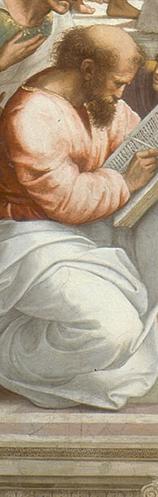
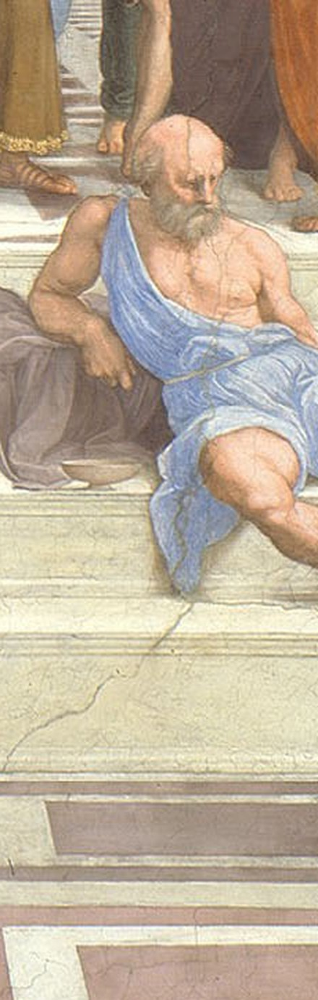
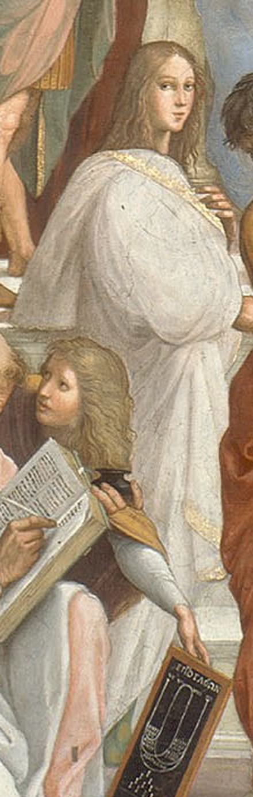
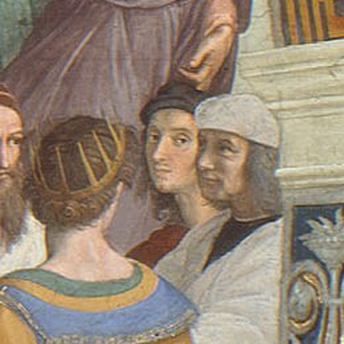
Far right, black beret, eyes on ours. It's Raphael himself, standing beside a fellow painter. He signed this wall with his face.
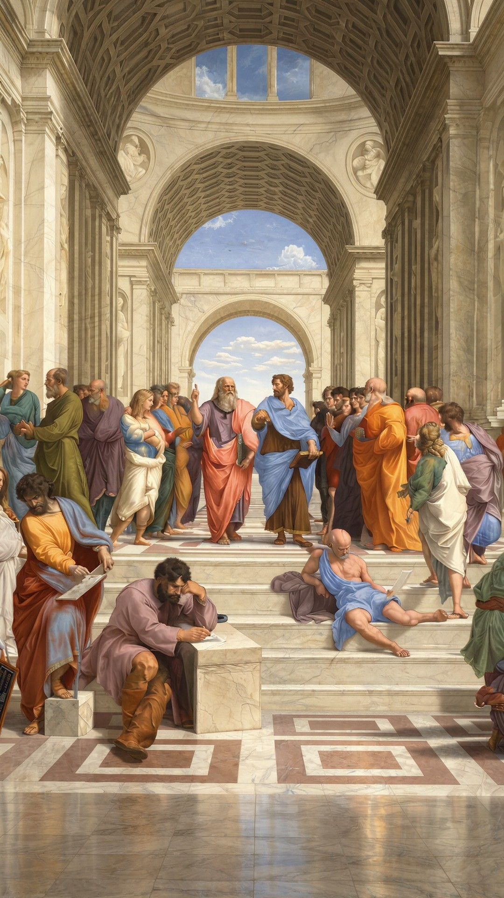
Walk up the steps, past Plato and Aristotle. Watch the film on our page.